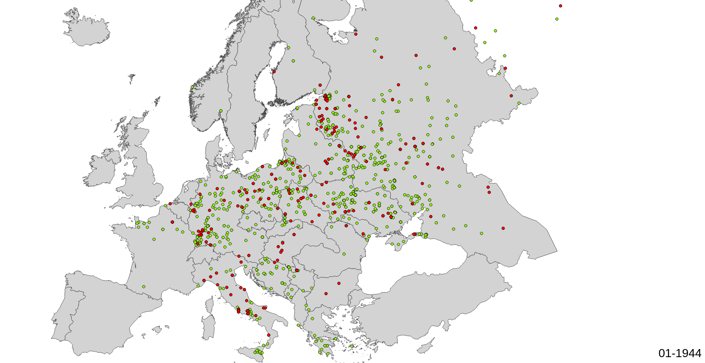
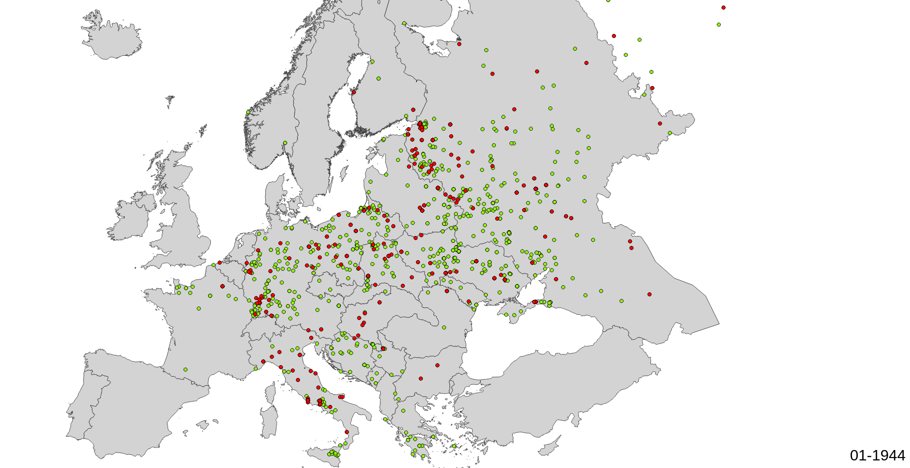

INTRO
A consequence of the defeat of France in the Franco-Prussian War of 1870 was the creation of the territory known as Alsace-Lorraine. The Treaty of Frankfurt dictated the terms of France’s defeat: large reparations, the dissolution of the Second Empire, and the concession of Alsace and north eastern Lorraine to Prussia. While this new boundary satisfied many political and military aims of Prussia, the annexation was not painless as the people of the territory maintained strong pro French sentiments. Within France, an obsession over the humiliating defeat inspired powerful sentiments of desire to restore to France the ‘lost provinces’ of Alsace and Lorraine. The Treaty of Versailles returned Alsace-Lorraine to France where it remained for the interwar years. In June of 1940, the capitulation of France left Alsace-Lorraine to the mercy of Nazi Germany. Under the pretext of uniting the people of Alsace-Lorraine with the rest of Germany, the region was annexed directly, unlike the rest of France which was partitioned into Vichy France and the Occupied Zone.
As one element of a broad and oppressive effort to Germanize the region, young men from Alsace-Lorraine were incorporated by force into the Wehrmacht and the Waffen-SS. Between 1942 and 1945, more than 130,000 men from Alsace and Lorraine were incorporated into the German military. Most perceptions of the Malgre-Nous and their experience center around the Eastern Front and especially on the Tambov prisoner of war camp where many were held. This web project seeks to lay the foundations for a more complete view of the experience of the Malgre-Nous by using maps and visualizations to demonstrate that the Malgre-Nous were active on every front. Linking personal memoirs with the locations of death provide a reference point for the feelings of the Malgre-nous in their efforts to understand their sense of place and identity amidst the many landscapes of World War II.
LOCATIONS OF DEATH
I chose to adapt historical and computational methods for my research in order to present a novel view of the Malgré-Nous; one that attempts to view their experience within the quantitative context while also portraying their experience in an approachable and intuitive manner. Foremost I wanted to present a complete picture of the geographic scope of their experience during the Second World War. The general consulates of Bas Rhin and Haut Rhin provide a list of all Alsatians dead wearing the German uniform during World War II. This list is a definitive compilation of Russian, German and French archival sources (notably Deutche Rotes Kreuz, records of Tambov prisoner of war camp, Kirsanov hospital, and records from the many Communes within Alsace). Utilizing this list of non-rentrees (those that never returned) I would be able to present an accurate depiction of where and when the Alsatians that served in the German army died. Of the 130, 000 soldiers, more than 20,000 are counted in this list of non-rentrees.


 



Map showing locations of death of all Alsatians incorporated into Wehrmacht [1942-1945]
Visualizations such as the above map provide an alternative way to both express data and understand it. It is well known within France that the majority of Malgré-Nous were sent to the Eastern Front, and those that were lucky, either deserted or in their capture were able to make it clear to the Russians that they were not Germans, but instead French men forced to fight for Germany, were sent to the prisoner of war camp Tambov, where they were held until the end of the war. This narrative simplifies a more complicated truth: the Malgré-Nous were present on every front of the war in Europe.
CASE STUDY
Having established this underlying layer onto the map of Europe allow us to coordinate two very disparate information sources: locations of death procured from archival research, with direct analysis of memoirs. Furthermore, since the data contains a temporal dimension, we are able to relate that too with the circumstances of the memoirs. This multilayered map allows us to make connections that would not have been made without it.
Bernard Huffschmitt and his family’s story provide a compelling and not uncommon example of the unique experience of Alsace and Lorraine through the 19th and 20th century. Bernard was born in Strasbourg in 1926, and in 1944, along with the other young men from Alsace and Moselle was illegally conscripted by force into the German Army. The conscription of Alsatians and Mosellans by the Nazi regime was illegal because they were born in France, and the acquisition of Alsace and Moselle by Germany was not recognized as legitimate by the international community. This separates his experience from that of his father, who, like Bernard was forced to fight for the German Empire, against his will. However, by 1914, Alsatians and Mosellans were legally German citizens, and it was within the German government’s rights to conscript them during the First World War. Huffschmitt and other “incorpores de force” referred to themselves as Malgré-Nous (despite us) in reference to the fact that they were fighting for a country they did not consider their own.
To this end, the example of Bernard Huffschmitt memoir, “Le grand tournant: un jeune Alsacien dans la tourmente de la guerre, 1939-1945”. broken into a collection of maps portraying parts of his experience (i.e military training, counteroffensive of Bastogne …) integrated with maps and images portraying the collective experience of the Malgré-Nous provides a case study of the application of this method for historical research.
Once the memoir was processed, the points were input into separate categories based on theme. In this case, the groupings were: under occupations, allied aerial bombardments, hospital stays, military training, experience in the SS, experience at the Battle of the Bulge, Battle of Berlin and lastly the path of return.
Map showing situation before Bernard is incorporated into Wehrmacht [09/1939 - 03/1941]
Like most Alsatians, Bernard Huffschmitt and his family experienced the anxiety of early months of the war (September to May), the so called “Phoney War”, from a significantly more tense perspective. His family joins the thousands of Alsatians that are evacuated from Strasbourg following the declaration of War on Germany by France on September 3rd. Most of the families that did leave Alsace were assimilated poorly into the rest of France, called the “boches de l’est” . By June of 1940, they had effectively moved on four separate occasions, though they could not evade the Nazis forever. Ultimately on October 15th they returned to Strasbourg and took note of the many changes brought upon by the occupiers, some overt, like the renaming of “la Rue du 22 novembre” into “Strasse des 19. Juni” Once again in Strasbourg, Bernard continued his education and, under pressure, was forced to join the Hitler Youth and later the Reichsarbeitsdienst (RAD, Reich Labor Service). All young adults served in the RAD before their eventual integration into either the Wehrmacht or Waffen-SS. Initially, the Nazi command expressed it would not be drafting anyone from the annexed territories, a statement that revealed itself as a lie in August of 1942. Instead, appeals, especially by the Waffen-SS were made to the local population to enlist voluntarily into the army.
Malgre-Nous deaths in Italy [07/1943 - 05/1945]
The process of preparing Alsace and Moselle to join in Nazi war efforts culminated with the declaration on the 25th of August in Alsace of the drafting of Alsatians born between 1909-1911. Most had already completed their military service for France. Even at the time, Bernard Huffschmitt knew that those called that were captured attempting to evade the draft were “Arretes, tortures, deportes, ils connurent, pour la plupart, la dure realite des camps de concentration allemenads et notamment celui du Struthof, ce sinistre camp d'extermination ... beaucoup d'entre eux [Alsatians attempting to escape incorporation] y laisserent leur vie. De plus, il etait frequent d'apprendre que les epouses ou les proches parents de ces 'traitres' ... avaient ete, eux aussi, arretes, tortures, et deportes." Although most were indeed sent to the Eastern Front, many of these conscripted men were sent to fight in Italy.
Map showing various locations Bernard went during his integration into the Wehrmacht [02/1943 - 06/06/1944]
Bernard, along with the rest of the young Alsatians born in 1926 was incorporated into the army on February 17th of 1944. He attended a swearing of oath ceremony on June 6th 1944 but kept his mouth closed throughout, a fact that made him proud well beyond the duration of the war. Only later did he learn of the significance of the day while at his post.
Malgre-Nous deaths at the Normandy Front [06/1944 - 08/1944]
Map showing Malgre-Nous deaths while Bernard was incorporated in the SS [07/1944 - 11/1944]
Throughout the rest of the year, not including a several weeks stay in the hospital from Scarlet Fever, he served in a unit charged with communications and decryption. Following the assassination attempt on July 20th, he was immediately transferred to an SS unit part of the RHSA (Reich Main Security Office). He stayed headquartered in Berlin for the majority of the year, until eventually being sent West in preparation for a planned counteroffensive near the Ardennes forest to stall the Allied advance.
Ardennes Counteroffensive [12/1944 - 01/1945]
From December to beginning of January, Bernard and his companions worked to maintain lines of communication during the hard fighting around Bastogne in winter of 1945. On the third of January, he was wounded during an Allied air strike and sent to a military hospital in Eisleben Germany. Where he could recuperate mentally and physically from the war with the help of Sister Elizabeth and support from the director of the hospital and of the director of the concentration camp (labor) near Hettstedt. By march he had recovered and his father had been liberated and sent back to Strasbourg. On march 20th he rejoined the RSHA headquarters on Prinz-Albrecht-Strasse in Berlin.
Berlin [06/1944 - 05/1945]
By April 26, the Russians had encircled Berlin and had started the process of fighting towards the center. Understandably so, Bernard was terrified and after several day of intense street fighting, in which he witnessed the death of two members of his units he lamented: “Qui pouvait encore raisonnablement esperer sortir vivant de ce Berlin qui n'etait plus que ruines, feu et sang? Ou la mort etait omnipresente, decidee a refuser a quiconque la moindre possibilite de lui echappe." By April 3rd, he and two other Alsatians were captured by the Russian Army and they began the long process of heading home. They returned to Strasbourg July 8th 1945.
CONCLUSION
Ultimately, this project was an exercise in digital methods and an ambitious attempt to bridge NLP with GIS work. Expressing the experience of the Malgré-Nous in this way came with a host of limitations as well as opportunities. The completion of this project required significant time investment in web programming, GIS methods, and Natural Language Processing. The most important technological aspect of this project was the web programming element, learning the basics of webscraping, web site design, dynamic interfaces, dynamic mapping, effective data storage methods and web hosting were all necessary. The most time intensive aspect of this project was the geocoding of the locations given in the archives. The complications were numerous but progress was made in developing a usable gazetteer of the Eastern Front that is hosted on the website. Some complications – arbitrary usage of French vs German naming for cities, ambiguities of common city names , German names for cities now in Poland and Russia (East Prussian cities), outdated names for cities in Ukraine, Belarus and Russia as they were referred to based on their Soviet name, and many typographical errors. Essentially the further East the harder to accurately place. With many hours of research using modern tools such as geonames, arcgis geocoder, a host of online gazetteers, I was able to geolocate approximately 12,000 points. This number could be greatly improved given sufficient time to look at German Army Situation Maps and Atlases from the time.